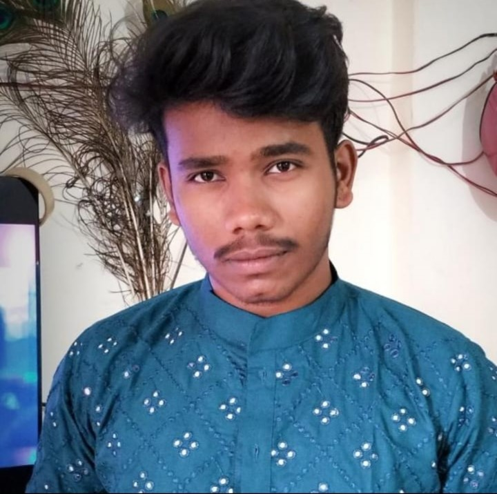
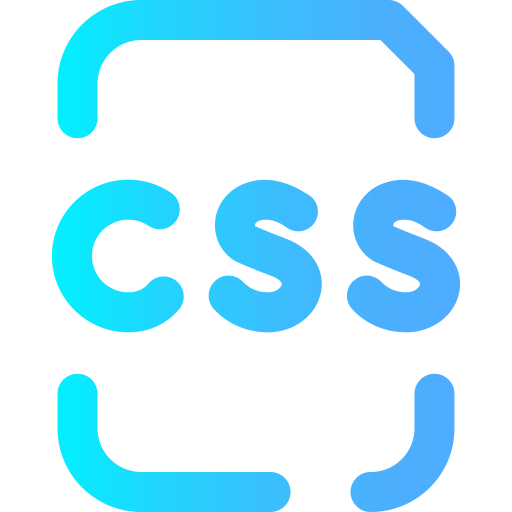
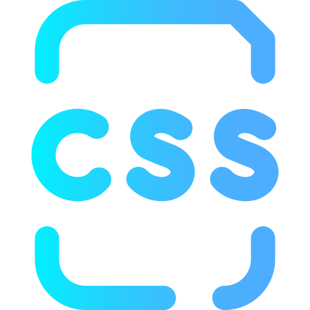

INTRODUCTION


 



Hello! 👋 I'm Prathamesh, a passionate developer specializing in Python, Machine Learning, Web Development, and Arduino Uno embedded systems. With a knack for crafting efficient and scalable solutions, I've tackled six Python projects, showcasing adaptability and problem-solving skills. In the realm of Machine Learning, I derive insights that bring value to real-world scenarios. My impact extends to web development, where I create seamless and immersive user experiences. Two impactful Arduino Uno projects highlight my ability to bridge the digital-physical gap. Join me on this journey of continuous learning and exploration as we navigate the ever-evolving tech landscape! 🚀
Programming Language I Am Good At